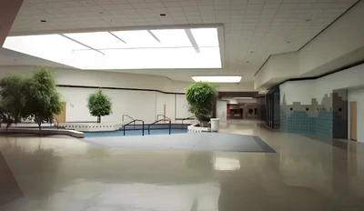

Backrooms levels
My Top 3 Backrooms levels
Author: Khris Tucker 2/12/24
Level 37: The Poolrooms

Heres a quick explanation of the poolrooms: "in: Threat Index: Class 1 »Safe »Unstable »Devoid of Entities Level 37, commonly referred to as the Poolrooms, is an expansive complex of interconnected rooms and corridors submerged in undulating, lukewarm water. Each area of the level varies greatly in size and structure, ranging rom uniform pools and hallways to more open, abnormally shaped areas. The majority of surfaces in the level are c omposed of white, ceramic tiling, with the only deviation from this color being the blue-green hue of the water. The tiles are eerily pristine in condition, all identical to one another, without a single hint of damage on their shiny surfaces."
2. Level: "The End"

Threat Index: Class ??? »Mysterious Properties »Unknown Information »Undocumented Entities The End is a presumably infinite library composed of open areas and wide corridors. The building contains bookshelves, stands, and the usual apparatus of a normal library. Furniture is often positioned randomly, sometimes converging with one another or onnecting into the walls. The library is virtually devoid of books, leaving its shelves barren. Throughout the building, short texts and labels can be found meaninglessly placed on walls, commonly depicting the level's name. The level's condition is relatively poor, showing signs of temporal decay; its walls are seen to have cracks, and some shelves may collapse under slight pressure. The building's lights are faulty, occasionally flickering or sometimes shutting off temporarily.."
Leaving this Level is extremely difficult, due to the unstable nature of its geometry. For example, the Level seems to loop when walking in one direction. However, turning around at this point will cause you to run into a wall. Frequent random no-clipping has also been documented, but this does not result in exiting the Level. Exits do exist, but there is currently no way to document them. In addition, the Level can cause wanderers to be unable to perceive other wanderers, even if they are within extremely close proximity.
3. Level 33: "The Deadmall"
Threat Index: Class 2 »Unafe »Stable »Low amount of enteties Large mall with retail stores inside spread across thousands of miles, reminiscent of a neon mall from the 1980s. The floor tiles are arranged in a pattern that varies in design. The fluorescent lights were positioned randomly, cast a variety of color tones, and produced a range of feelings for each color. Lights shine and cut at random times, and certain lights may be constantly off without shining again. The air conditioners around the place made no noise but provided a breeze. A constant breeze blows through the air, causing temperatures to fluctuate; there is no warmth at all. The speakers release soothing music, yet the space is utterly silent, isolating the place for all time.